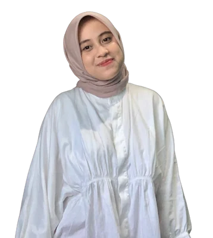
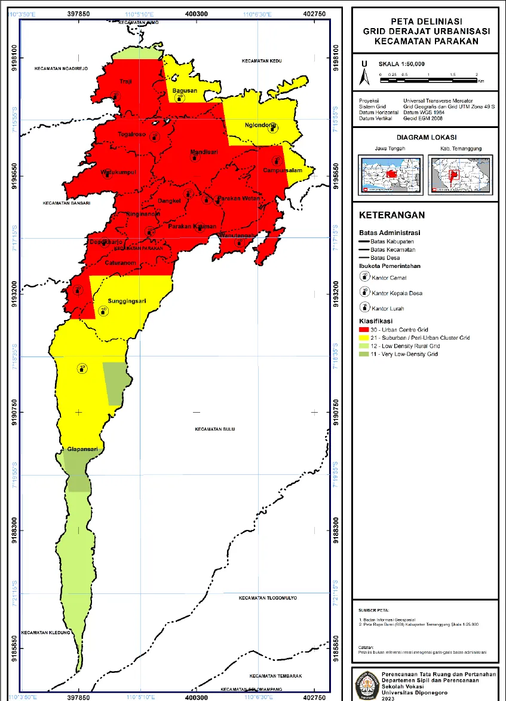

- Prepared 16 Strategic Environmental Assessments (KLHS/SEA) for 8 local governments (11 completed and 5 in progress as of November 2026), compiling and analysing technical data and applying GIS (QGIS/ArcGIS) to support policy recommendations formally adopted into spatial planning regulations.
- Delivered cross-sector GHG emissions inventories (Energy, IPPU, AFOLU, Waste) for Banjarnegara Regency, Kudus Regency and Salatiga City (inventory year 2025) in Indonesia's SIGN SMART system using IPCC 2006 methodology, and compiled the verified results into inventory documents that informed regional decarbonisation strategy and official government reporting.
- Acted as day-to-day point of contact for the KLHS and GHG workstreams: schedule coordination, data requests and follow-up on document completeness with environmental and spatial planning agencies, industries, local government units, schools, universities and hospitals, keeping projects on track through formal review.
- Contributed to organisation-wide communications as Communication Officer, handling social media graphic design and content writing to strengthen public visibility and stakeholder engagement.

Hi, I'm Nefia.Environmental Technical Assistant at BINTARI Foundation, Semarang
Urban and environmental planner in Central Java, Indonesia. Pick a colour to see the work behind it.
- 3.58 GPA · BASc Spatial Planning, Universitas Diponegoro
- 7.0 IELTS · 135 Duolingo · CEFR C1
Urban
Planning towns from the data up: detailed spatial plans (RDTR), urban boundaries drawn from satellite grids, housing need and regional demographics.
- 93.75%
- agreement of my urban delineation with BPS classification
- 20 yr
- horizon of the Parakan RDTR, 2024–2044
- 2,237
- homes Parakan needs by 2043
Climate
Measuring emissions and planning for climate risk: regional GHG inventories, climate vulnerability inside KLHS, and coastal hazard and resilience.
- 3
- GHG inventories for 2025: Banjarnegara, Kudus and Salatiga
- 4
- IPCC sectors: Energy, IPPU, AFOLU and Waste
- 3
- coastal regencies in my tsunami-risk paper, ICIAP 2026
Sustainability
Writing sustainability into decisions: Strategic Environmental Assessments (KLHS), ESG-based development and public environmental campaigns.
- 16
- KLHS for 8 local governments, 11 completed and 5 in progress
- EESG
- framework proposed for transit-oriented development
- 2
- ESG credentials in 2026: IFRS S1 & S2, ESG Reporting
Where I've worked
Five roles since 2022, newest first. Open a row to see what I did there.
- Contributed to a six-member team delivering a 20-year Detailed Spatial Plan (RDTR) for Parakan Urban Area within six months, analysing infrastructure demand, economic potential and housing needs.
- Analysed the market and economic potential of local commodity production and economic activity, translating findings into recommendations for trade, services and agricultural development.
- Delivered a housing demand forecasting model from population projections and household assumptions, quantifying required units by type and identifying land constraints for residential planning.
- Guided 99 Spatial Planning and Land Management students in survey preparation, data collection techniques and database management in Microsoft Excel, including data inventory, cataloguing, code-labelling and cross-sheet data linking.
- Evaluated and gave feedback on students’ databases, report writing, map visualisation and other academic submissions required by the course coordinator.
- Conducted population analysis and aggregate population projections for urban and rural areas across 8,000 villages and sub-districts in Central Java Province, following the 2020 urban–rural classification regulation of the Central Bureau of Statistics (BPS).
- Performed Inclusive Economic Development Index (IPEI) analysis at provincial and district/city level, calculating composite index values from the poverty and employment sub-pillars and identifying spatial disparities in inclusive growth to inform regional development and policy prioritisation.
- Served as Mapping Officer for the Geospatial Framework and Wilkerstat Update for the 2023 Agricultural Census (ST2023) in Tembalang District, validating administrative boundaries and land cover data through interviews with 23 community leaders across 13 census blocks within one month.
25 sites, one province
Every place I have worked in Central Java. Drag to turn the map, play the years, or select a pin to see what I did there.
2024–26
25 sites in 15 regencies and cities
Work, filed by where I did it
Paid work and internships, university coursework, research beyond coursework, organisations and achievements. Open a card for the context, my part and the proof.
Three studies, explained
Each starts from a question. Pick a study to see how it was answered and what it found.
Can transit-oriented development put ESG into practice?
A systematic literature review of TOD in the fast-growing cities of developing countries.
With Muhammad Fadhil Athallah, I reviewed published studies on how transit-oriented development relates to environmental, social and governance principles, and to inclusive, sustainable economic growth. We sorted what the literature reports into benefits and obstacles, then looked at what an ESG assessment leaves out.
EESGOur proposal: add an explicit Economic dimension to ESG, because current ESG assessments under-represent it. TOD in emerging economies would then be planned and judged on all four.
2025Presented at the 3rd EICOMB International Conference and published in Arthatama Vol. 9 No. 1, pp. 173–186. I am second author and presenter. Read the paper
Illustration of the EESG idea around a transit node
Will Parakan have room to house its people by 2043?
A housing demand projection, set against a map of the land that can still be built on.
Temanggung's 2024–2044 spatial plan makes Parakan an urban area on the Magelang–Temanggung corridor, which draws people in. We projected population to 2043 with the geometric method, counted one home for every household of four, and compared that with the houses that already exist. The shortfall was split 1 : 2 : 3 into large, medium and small plots, with 30% added for infrastructure and 15% for facilities.
2,237homes short in 2043: 373 large, 746 medium and 1,118 small
35.13 haof land needed by 2043: 24.23 ha for housing, 7.26 ha for infrastructure and 3.63 ha for facilities.
243.97 haof developable land, found by overlaying built-up, conservation and green open space in ArcGIS. That is about seven times the need.
RDTRThe paper grew out of the housing analysis I prepared for the Parakan RDTR, and recommends carrying these figures into the plan. I am fourth of five authors. Read the paper
Parakan Urban Area, 1,433.93 ha. One square is about 14 ha.
Where does Parakan's city actually end?
Global Human Settlement Layer grids, the Degree of Urbanisation method, BPS classification and field validation, combined into one procedure.
GHS-POP and GHS-BUILT rasters were processed with zonal statistics to classify each grid cell. The result was overlaid with the BPS urban–rural village classification, adjusted through field validation, and tested for service coverage with breaking-point theory and isochrones.
10/16villages classified as urban after field validation; the remaining 6 are rural.
93.75%agreement between the delineation and Statistics Indonesia (BPS) classification.
EC00202470546Procedure registered as a copyright work with the Directorate General of Intellectual Property (DJKI) on 17 July 2024, record no. 000645897. PDKI record

Drag to compare · Peta IV.3 and IV.5, 2024
In the field
Consultations, surveys, studios and campaigns. Hover to pause the reel, and select a photo to open it.
Proof
Degree, test scores, papers and certificates. Where a record is public, the link goes straight to it.
3.58GPA, out of 4.00
Bachelor of Applied Science, Spatial Planning and Land ManagementUniversitas Diponegoro, Semarang · 2020–2024
Thesis on the procedure for delineating Parakan's urban area, registered with DJKI as copyright work EC00202470546.
Papers
Certificates and training
Tools and skills
Analysis
Spatial and environmentalLand use evaluationPopulation projectionEconomic projectionPolicy review
Frameworks
IPCC 2006SIGN SMARTDPSIRDegree of UrbanisationSNI 03-1733-2004
Sustainability reporting, working knowledge
GRI StandardsIFRS S1 & S2 · PSPK 1 & 2Report benchmarking
Data
Pivot tablesPower QueryPower PivotSpatial databasesWebGIS
Research
FGDInterviewsQuestionnairesSystematic reviewReport writing
Communication
InfographicsVideo contentReport designPublic speakingStakeholder coordination
Let's talk.
I am looking for work in urban planning, climate and sustainability, including environmental assessment and ESG advisory. Email is the fastest way to reach me.